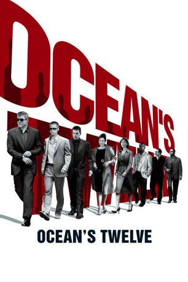

#826 Ocean's Twelve
 
 IMDB-Wertung: 6.5 / 10
IMDB-Wertung: 6.5 / 10  Metascore: 58
Metascore: 58 
Vor drei Jahren hat Danny Oceans Team einen der waghalsigsten und lukrativsten Raub��berfälle aller Zeiten durchgeführt: Mit seiner rechten Hand Rusty Ryan, dem Nachwuchs-Taschendieb Linus Caldwell, dem Sprengstoffexperten Basher Tarr, Safeknacker Frank Catton und anderen räumte Danny den uneinnehmbaren Las-Vegas-Tresor des skrupellosen Unternehmers Terry Benedict bis auf den letzten Cent aus. Oceans berüchtigte Crew teilte sich die 160 Millionen Dollar Beute und ließ Gras über die Sache wachsen. Als jemand die Regel Nummer eins missachtet und das Team an Benedict verpfeift, ist es mit der Ehrlichkeit endgültig vorbei. Denn Benedict will seine 160 Millionen zurück – mit Zinsen. Sonst wird er ungemütlich. Und sehr schnell begreift das Team, dass nicht nur der allmächtige Benedict seine Verbindungen spielen lässt, um Oceans Elf auf den Zahn zu fühlen…
Jahr: 2004
Dauer: 125 Minuten
FSK: 6
Land: USA Studio: Warner Bros.Tonspuren: DD5.1 - ,
Untertitel: Englisch,
Auflösung: 1080p (1920x800) Größe: 10240 MB
Genre: Krimi, Thriller
Regisseur:  Steven Soderbergh
Steven Soderbergh
Drehbuch: George Nolfi, George Clayton Johnson, Jack Golden Russell
Soundtrack: David Holmes
Darsteller:
 Brad Pitt als Rusty Ryan
Brad Pitt als Rusty Ryan Catherine Zeta-Jones als Isabel Lahiri
Catherine Zeta-Jones als Isabel Lahiri George Clooney als Danny Ocean
George Clooney als Danny Ocean- Ed Kross als Bank Officer
 Julia Roberts als Tess Ocean
Julia Roberts als Tess Ocean- Don Tiffany als House Painter
 Andy Garcia als Terry Benedict
Andy Garcia als Terry Benedict Casey Affleck als Virgil Malloy
Casey Affleck als Virgil Malloy Scott Caan als Turk Malloy
Scott Caan als Turk Malloy Mini Anden als Supermodel
Mini Anden als Supermodel- Shaobo Qin als Yen
- Leah Zhang als Mani-pedi Woman #2
 Bernie Mac als Frank Catton
Bernie Mac als Frank Catton Don Cheadle als Basher Tarr
Don Cheadle als Basher Tarr Jared Harris als Basher's Engineer
Jared Harris als Basher's Engineer Matt Damon als Linus Caldwell
Matt Damon als Linus Caldwell Carl Reiner als Saul Bloom
Carl Reiner als Saul Bloom Eddie Jemison als Livingston Dell
Eddie Jemison als Livingston Dell Elliott Gould als Reuben Tishkoff
Elliott Gould als Reuben Tishkoff- Nerissa Tedesco als Palm Reader
- Nichelle Hines als Assistant Manager
 Robbie Coltrane als Matsui
Robbie Coltrane als Matsui Jeroen Krabbé als van der Woude
Jeroen Krabbé als van der Woude Vincent Cassel als François Toulour
Vincent Cassel als François Toulour Eddie Izzard als Roman Nagel
Eddie Izzard als Roman Nagel- Michael DeLano als Casino Manager
- Nasser Faris als Frank's Jail Mate
- Candice Azzara als Saul's Lady
- Anne-Solenne Hatte als Toulour Woman #8
 Jerry Weintraub als American Businessman
Jerry Weintraub als American Businessman- Martina Stella als Nagel's Assistant
- Ana Caterina Morariu als Bruce Willis' Companion
- Adriano Giannini als Museum Director
- Dennis Di Angelo als Photographer's Assistant
 Cherry Jones als Molly Star / Mrs. Caldwell
Cherry Jones als Molly Star / Mrs. Caldwell- Scott L. Schwartz als Bruiser
 Giselda Volodi als Toulour's Butler
Giselda Volodi als Toulour's Butler- Mathieu Simonet als Backpack Kid
- Jonathan Avigdori als Italian Policeman , uncredited
- Anthony Bonaventura als Bar Patron , uncredited
- Thomas D. Craven als Bar Patron , uncredited
 Sue Durso als Commuter , uncredited
Sue Durso als Commuter , uncredited- Rebecca Engel als Girl in Casino , uncredited
 Albert Finney als Gaspar LeMarque , uncredited
Albert Finney als Gaspar LeMarque , uncredited Topher Grace als Topher Grace , uncredited
Topher Grace als Topher Grace , uncredited- Vince Lauria als Casino Patron , uncredited
- Rik Sinkeldam als Man on Bike , uncredited
- Michelle Sleger als Maid of Honor at Virgil's Dinner , uncredited
 Gian Franco Tordi als Italian Secret Service , uncredited
Gian Franco Tordi als Italian Secret Service , uncredited- Maurice Nathan Weert als Europol Agent , uncredited
Datei: X:\5-Pentalogie(A-Z)\Oceans 11-12-13\Ocean's Twelve (2004, FSK6, 1920x800).mkv seit 30.03.2015
Festplatte: HD Collection-3(N-Z)-6(A-Z)
 Es gibt insgesamt 8 Filme in der Gruppe '5-Pentalogie(A-Z)\Oceans 11-12-13'
Es gibt insgesamt 8 Filme in der Gruppe '5-Pentalogie(A-Z)\Oceans 11-12-13'